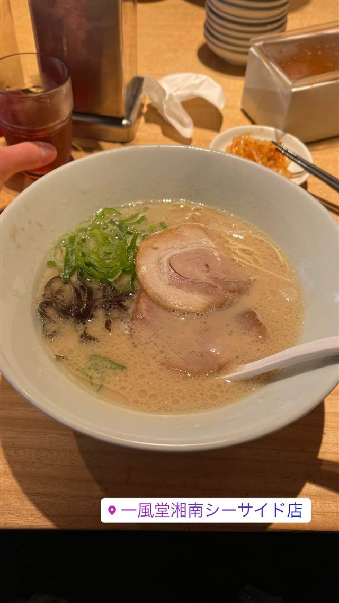

ラーメン · 豚骨 · 腰越
博多一風堂 湘南SEASIDE
元バー経営者が生み出した「白丸元味」のとんこつラーメン
一風堂湘南シーサイド店
1985年に福岡・大名で創業した「一風堂」は、バー経営者だった河原成美氏が一念発起して開いたとんこつラーメン店が始まり。「白丸元味」「赤丸新味」で知られ、今や世界に展開する日本を代表するラーメンチェーンとなった。湘南SEASIDE店は江ノ電腰越駅近く、海辺にある支店。
TRIVIA
豆知識
- 創業者はもともとラーメン屋ではなくバーのオーナーだった
- 一風堂は世界十数カ国に展開する国際的なラーメンチェーンに成長した
REVIEWS
世間の評判
84.5ラーメンDB
赤丸ベース味噌と江ノ島前の行列
- 赤丸新味ベースの味噌ラーメンやクリーミーな豚骨白丸を評価する声が目立つ
- 江ノ島を望む好立地で平日でも40人待ちの行列になったとの報告がある
- 博多つけ麺は魚介の風味が強く豚骨感が控えめだったという意見もある
ラーメンデータベース 口コミ21件・最新 2020-01
| 創業 | 一風堂は1985年10月16日、福岡市大名に創業（湘南SEASIDE店は支店） |
|---|---|
| 系譜 | 創業者・河原成美氏は1979年に博多駅近くでバー「AFTER THE RAIN」を開業して成功した後、約1年の準備・修業を経て一風堂を開業した。 |
| 看板 | 白丸元味・赤丸新味（とんこつラーメン） |
| こだわり | 1996年に看板メニュー「白丸元味」「赤丸新味」が誕生。当時の博多ラーメンの「怖い・臭い・汚い」イメージを一新し、女性が一人でも入りやすい清潔な店づくりを目指した。 |
| 掲載・評価 | TV東京「ラーメンの鉄人」選手権で1997・1999・2000年に3連覇。現在は海外にも展開する国際的チェーン。 |
| どこから | 東京から1時間ほど |
| 予算 | 昼 ～¥999 夜 ¥1,000～¥1,999 |
| 定休日 | 無休（元旦除く） |
| 場所 | 江ノ電腰越駅 神奈川県鎌倉市腰越3-5-29 プラザ鎌倉2F |
| メモ | 湘南SEASIDE店は江ノ電腰越駅近くの海辺の立地にある支店。 |
食べたもの：豚骨ラーメン
NEARBY
近い店・同じ系統の店
-
 ★
豚骨 東高円寺駅
豚骨 蒼翔
クラウドファンディングで開業、鶏を使わない家系風豚骨
昼 ¥1,000～¥1,999 夜 ¥1,000～¥1,999
★
豚骨 東高円寺駅
豚骨 蒼翔
クラウドファンディングで開業、鶏を使わない家系風豚骨
昼 ¥1,000～¥1,999 夜 ¥1,000～¥1,999
-
 ★
豚骨 三ツ境駅
ラーメンショップ 二ツ橋店
二郎顔負けの分厚いチャーシューをのせるネギラーメン
昼 ～¥999 夜 ¥1,000～¥1,999
★
豚骨 三ツ境駅
ラーメンショップ 二ツ橋店
二郎顔負けの分厚いチャーシューをのせるネギラーメン
昼 ～¥999 夜 ¥1,000～¥1,999
-
 ★
豚骨 京急川崎駅
自家製麺 麺屋 利八
1日熟成させた自家製太麺と吊るし焼きチャーシューの鶏白湯
昼 ¥1,000～¥1,999 夜 ¥1,000～¥1,999
★
豚骨 京急川崎駅
自家製麺 麺屋 利八
1日熟成させた自家製太麺と吊るし焼きチャーシューの鶏白湯
昼 ¥1,000～¥1,999 夜 ¥1,000～¥1,999
-
 ★
豚骨 赤坂見附駅
なかご
豚骨100%なのに透き通る24時間煮込みの純粋豚そば
昼 ¥1,000～¥1,999 夜 ¥1,000～¥1,999
★
豚骨 赤坂見附駅
なかご
豚骨100%なのに透き通る24時間煮込みの純粋豚そば
昼 ¥1,000～¥1,999 夜 ¥1,000～¥1,999
-
 豚骨 渋谷
らーめん はやし
元副住職が独学で開いた柚子香る豚骨魚介ラーメン
豚骨 渋谷
らーめん はやし
元副住職が独学で開いた柚子香る豚骨魚介ラーメン
-
 豚骨 大和駅
うまいヨ ゆうちゃんラーメン
TRYとんこつ3年連続王者の「どっ豚骨」ラーメン
夜 ¥2,000～¥2,999
豚骨 大和駅
うまいヨ ゆうちゃんラーメン
TRYとんこつ3年連続王者の「どっ豚骨」ラーメン
夜 ¥2,000～¥2,999